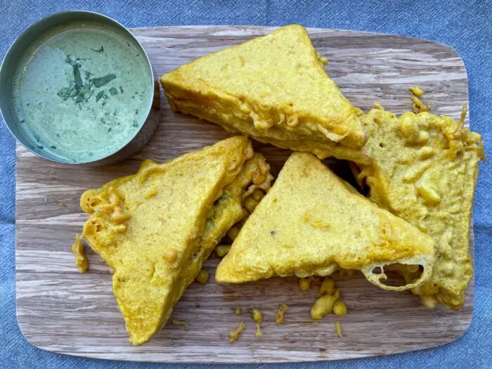

Bread Pakoda

Delicious, crispy, deep fried and all scoffed in minutes this Bread Pakoda is a street food favourite and so good served with fresh tangy chutneys or some fried green chillies on the side. It used to be my guilty pleasure and one that I still indulge in. The spicy potato mix encased with a crispy coating of the gram flour. Every bite of crisp batter, soft bread and spicy mashed potato served with a warm cup of tea was (and still is!) pure pleasure.
The potato mix is easy to make, though the potato is best crushed by hand as you want a slightly lumpy mix rather than smooth mashed potato base. You can even serve the potato mix with some puris and kadhi if you have any extra leftover.
Ingredients
(Serves 4)
- 4 slices of white bread
- Oil for deep frying
For the batter;
- 150gms gram flour/ chickpea flour
- ½ tsp turmeric powder
- ½ tsp kashmiri chilli powder
- Salt to taste
For the potato mix;
- 2 tbsp vegetable oil
- 600gms potatoes boiled and roughly crushed
- Pinch of asafoetida
- 1 tsp mustard seeds
- curry leaves
- 1 birds eye green chillies finely chopped
- 2 tsp finely chopped ginger
- 1/2 tsp turmeric powder
- 60gms frozen green peas
- 1 tbsp roughly chopped coriander
- Juice of half a lemon
- Salt to taste
Method
-
To make the potato mix; heat oil in a heavy bottom sauce pan. Add the asafoetida followed by mustard seeds. As they splutter add the curry leaves and green chillies. Fry for a minute on medium heat and add the chopped ginger. Fry for a further minute
-
Add turmeric powder; stir and add the potatoes along with the green peas. Stir to make sure the mix is evenly coloured. Cover and steam on a low heat for 3-4 minutes. Garnish with coriander, add lemon juice and season to taste. Let the mix cool while you make the gram flour batter
-
In a large mixing bowl add the gram flour along with the powdered spices and salt. Add water and whisk well to make a smooth batter. You’re looking for a double cream consistency
-
Place the sliced bread on a plate and the spiced potato mix. Flatten the potato mix with the back of the spoon. Place another slice over it to make a sandwich. Cut the sandwich diagonally. Repeat for rest of the potato mix
-
Heat oil in a wok or large kadhai for deep frying. Dip the potato sandwich in the gram flour batter mix and deep fry until it is light brown and crisp all over around 1-2 minutes each side. Drain on kitchen paper. Cut the bread pakoda into smaller pieces and serve warm with a chutney
Home